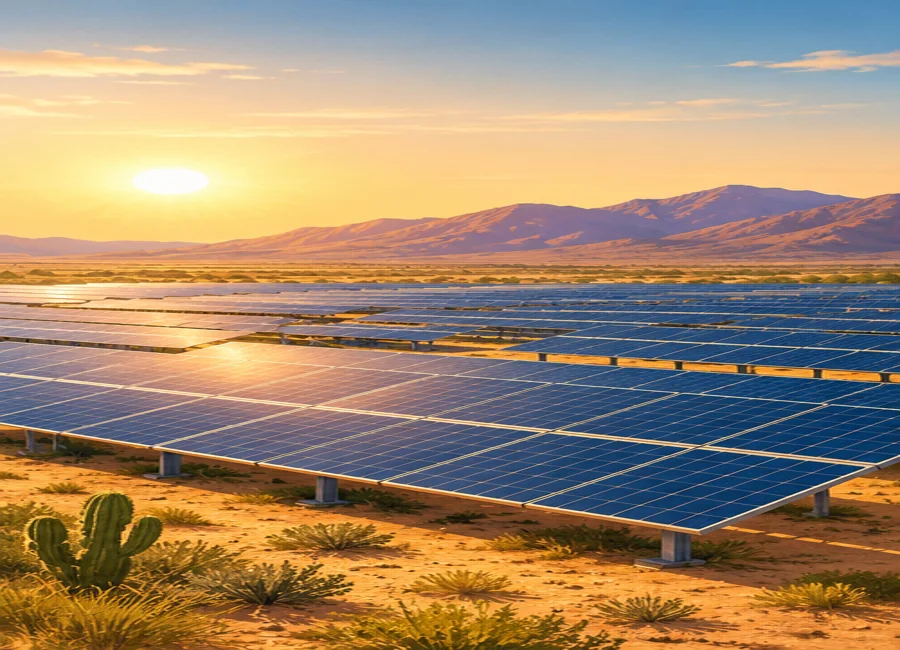
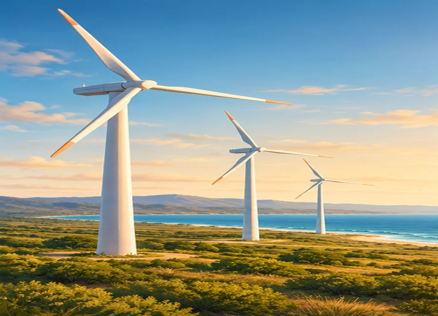
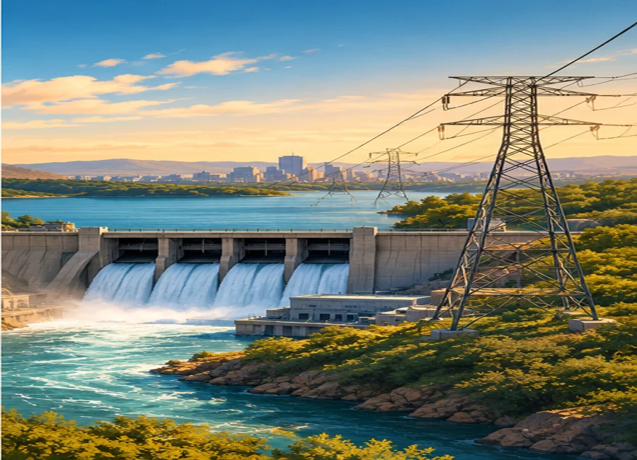
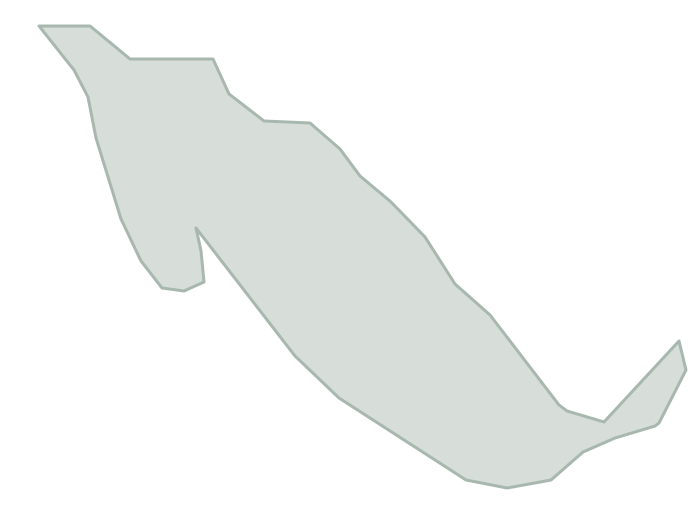

✦ EXPLORA EL SISTEMA ELÉCTRICO NACIONALAtlas Eléctrico
Atlas Eléctrico
de México
De los recursos energéticos al consumidor.
Un recorrido interactivo para comprender de dónde viene la electricidad, cómo se genera, cómo se transporta y cómo llega a los usuarios.
Proyecto académico · Información identificada por fuente, año y alcance.
ENERGÍA SOLARRED ELÉCTRICA
CONOCECOMPRENDECONECTA
EL VIAJE DE LA ELECTRICIDADDe un recurso natural
De un recurso natural
a la energía que usamos.
La electricidad es una forma de energía secundaria: se obtiene al transformar recursos primarios mediante distintas tecnologías. Después, redes de transmisión y distribución permiten entregarla en los centros de consumo.
01RecursosSol, viento, agua, combustibles
→02GeneraciónConversión a electricidad
→03TransmisiónTransporte en alta tensión
→04DistribuciónEntrega a usuarios
MÓDULO 0
Recursos energéticos
Identifica el recurso primario, el combustible, la conversión y la tecnología. Después pon a prueba lo aprendido.
1. Clasificador interactivo
Selecciona una categoría para cada tarjeta. Hay 15 recursos, combustibles y tecnologías.
Importante: la clasificación se refiere al recurso o combustible, no necesariamente a la tecnología. Por ejemplo, una turbina de gas puede utilizar gas natural o diésel; por eso se clasifica según el combustible indicado.
2. Diagramas de conversión
Elige una cadena y selecciona una etapa para consultar qué sucede.
Selecciona una etapa del proceso.



3. Matriz energética de México
Composición de la generación nacional y evolución de la generación de CFE.
Participación por tecnología · México 2022
NACIONALPorcentajes publicados en PRODESEN 2023–2037, capítulo 4, figura 4.9. “Otras limpias” y “otros fósiles” se conservan como categorías agregadas del documento.
Dos conceptos distintos: renovable describe la capacidad de regeneración del recurso; limpia es una categoría definida por la legislación que también puede incluir tecnologías no renovables, como la nuclear.
Generación neta de CFE · 2022–2024
SOLO CFEGeneración neta reportada por CFE para los años indicados.
4. Comparador energético
Selecciona dos o más opciones para comparar sus características cualitativas.
5. Actividad de reflexión
Interpreta datos y relaciones. Selecciona una respuesta y comprueba tu razonamiento.
MÓDULO 1
Generación eléctrica
La generación convierte energía primaria en electricidad. Consulta centrales reales con ubicación referencial y capacidades publicadas cuando están disponibles.
Evolución de generación neta CFE
GWh · CFEVariación interanual calculada a partir de las cifras: 2023/2022 ≈ +5.9%; 2024/2023 ≈ +2.5%. Cálculos propios sobre datos reportados.
Participación de energías limpias en generación bruta CFE · 2024
SOLO CFECFE reportó 38,982.9 GWh limpios de 154,059 GWh brutos (25.3%). El 74.7% restante se obtiene como complemento aritmético del total de esa tabla; no es la participación nacional.
Ciclo combinado vs. vapor convencional · CFE Generación I
GENERACIÓN NETA · GWhEPS CFE Generación I: 2023–2024. Es una comparación de esa empresa subsidiaria, no de toda la generación nacional ni de toda CFE. Informe Anual CFE 2024, p. 273.
Centrales eléctricas en México
Explora una selección de centrales y su distribución por región.
Selecciona una central para consultar los datos disponibles.
Conceptos de generación
Abre cada concepto para conocer su funcionamiento.
Ciclo combinado
Combina una turbina de gas con una turbina de vapor. Los gases calientes de escape producen vapor en un generador de recuperación de calor; el vapor acciona una segunda turbina. Suele usar gas natural, aunque el combustible depende del diseño y autorización de cada unidad.
Vapor convencional y ciclo Rankine
El combustible aporta calor a una caldera, el agua se convierte en vapor y este se expande en una turbina acoplada a un generador. El vapor se condensa y el agua vuelve al ciclo. El ciclo Rankine describe idealmente esta conversión termodinámica.
Hidroeléctrica
El agua almacenada o en movimiento transfiere energía hidráulica a una turbina; el eje acciona un generador. La producción depende de disponibilidad hídrica, operación del embalse y condiciones del sistema.
Nucleoeléctrica
La fisión de núcleos de uranio libera calor. Ese calor produce vapor que mueve turbinas y generadores. La energía nuclear no es renovable, pero se considera energía limpia bajo la definición jurídica aplicable.
Geotérmica, eólica y fotovoltaica
La geotermia aprovecha calor del subsuelo; la eólica convierte energía cinética del viento en rotación; la fotovoltaica transforma radiación solar directamente en corriente continua, que un inversor convierte en corriente alterna.
MÓDULO 2
Transmisión eléctrica
La transmisión transporta grandes bloques de energía a alta tensión desde las zonas de generación hasta las subestaciones y centros de carga.
Sistemas eléctricos interconectados
Representación conceptual de los cuatro sistemas mencionados en la consigna. Las áreas aisladas se muestran separadas.
De las centrales a los centros de consumoLa red de transmisión transporta grandes bloques de energía a alta tensión.
Sistema Interconectado Nacional
Integra la mayor parte del territorio continental y permite intercambios entre regiones conectadas.
Baja California
Sistema regional de la península, no conectado sincrónicamente al SIN.
Baja California Sur
Sistema aislado respecto del SIN y del sistema de Baja California.
Mulegé
Sistema aislado en la zona norte de Baja California Sur; no se representa como conectado al SIN.
Simulador de transmisión trifásica
Modifica potencia, tensión, resistencia equivalente por fase y factor de potencia.
Corriente de línea251 A
Pérdidas resistivas0.38 MW
Pérdidas / potencia0.38%
Potencia aparente100 MVA
I = P / (√3 · V · cos φ) · Ppérdidas = 3 · I² · R
Relación conceptual: tensión y pérdidas
Se mantiene P, R y cos φ; se compara la pérdida calculada a distintas tensiones. Las pérdidas se reducen al elevar la tensión para la misma potencia transmitida.
MÓDULO 3
Distribución eléctrica
La distribución reduce los niveles de tensión y entrega electricidad a los centros de consumo mediante redes de media y baja tensión.
Longitud de redes reportada por CFE
La suma aritmética de media y baja tensión es 894,206 km. No se interpreta como longitud de un único circuito. El Informe Anual CFE 2023 también reporta 2,148 subestaciones de distribución.
Distribución territorial del servicio
La CFE organiza la atención comercial en 16 divisiones de distribución.

16divisiones de distribución
Red ilustrativa de cobertura nacional; no representa límites geográficos oficiales.Una red que llega a todo el país
La distribución conecta subestaciones, redes de media y baja tensión, y puntos de consumo en hogares, comercios e industrias.
En 2023, CFE reportó 551,465 km de redes de media tensión y 342,741 km de baja tensión.
Simulador de transformador ideal
Modifica la tensión primaria, la relación de espiras y la potencia aparente.
((((
Núcleo
magnético
magnético
))))
Tensión secundaria Vs440 V
Corriente primaria Ip6.56 A
Corriente secundaria Is340.9 A
Relación30 : 1
Vp / Vs = Np / Ns · Vp · Ip = Vs · Is (transformador ideal, monofásico equivalente)
MÓDULO 4
¿Sabías que?
20 hallazgos para interpretar el sistema eléctrico mexicano: cinco sobre recursos, generación, transmisión y distribución.
APARTADO ESPECIAL
La reforma energética de 2013: ¿cómo cambió el sector eléctrico mexicano?
Una lectura histórica que distingue los cambios legales, los objetivos declarados y los resultados observados.
Modelo previo
La CFE era el actor central del servicio público; la participación privada se encontraba limitada a modalidades previstas en el marco anterior.
Reforma constitucional
Se publicó el decreto de reforma a los artículos 25, 27 y 28 constitucionales en materia energética.
Leyes secundarias
Se expidió la Ley de la Industria Eléctrica y se reorganizó el marco de generación, mercado, operación y regulación.
Implementación
Se desarrollaron el Mercado Eléctrico Mayorista, la separación funcional y nuevas modalidades de participación pública y privada.
Nuevo marco jurídico
Se publicó la Ley del Sector Eléctrico y la Ley de la Empresa Pública del Estado, CFE. La Ley de la Industria Eléctrica de 2014 fue abrogada conforme al nuevo decreto.
Actores institucionales relevantes: Poder Ejecutivo Federal durante el gobierno de Enrique Peña Nieto, Congreso de la Unión y legislaturas estatales en el proceso constitucional; SENER, CFE, CENACE, órganos reguladores y empresas participantes durante la implementación. Esta lista identifica instituciones involucradas, no atribuye por sí sola posiciones partidistas ni resultados.
Cambios estructurales asociados a 2013–2014
- Mayor participación privada en generación bajo permisos y reglas del mercado.
- Creación del Mercado Eléctrico Mayorista.
- Separación funcional de actividades y empresas subsidiarias de CFE.
- Fortalecimiento del papel operativo del CENACE.
- Transmisión y distribución permanecieron como áreas estratégicas del Estado.
Lectura del marco 2025
- Se reconoce a CFE como Empresa Pública del Estado.
- La planeación y control del SEN, así como transmisión y distribución públicas, se enmarcan como áreas estratégicas.
- Se prevén formas de participación de particulares bajo la nueva legislación.
- La ley vigente debe leerse en su texto actualizado, no con reglas de 2014 como si siguieran vigentes.
Cinco indicadores para observar cambios y resultados
La legislación secundaria de 2014 estableció el marco del Mercado Eléctrico Mayorista y la participación de distintos agentes.
Indicador de participación de generación eléctrica CFE en 2022 y 2024 (42.3%); 41.9% en 2023. Informe Anual CFE 2024, p. 27.
Valores observados de 2022, 2023 y 2024. Es el indicador de adición programada, no una medición de capacidad total instalada. Informe CFE 2024, p. 27.
Generación bruta limpia CFE en 2024, equivalente a 25.3% de su generación bruta en la tabla. Informe CFE 2024, p. 26.
Proyectos de transmisión, transformación y distribución concluidos en 2024: 40 subestaciones, 2,280 MVA y 109.2 km-c de líneas. Informe CFE 2024, p. 193.
TRANSPARENCIA Y TRAZABILIDAD
PRODESEN 2023–2037, capítulo 4
Informes Anuales CFE 2022, 2023 y 2024
Central Nucleoeléctrica Laguna Verde
Infraestructura hidroeléctrica CFE
PRODESEN histórico, mapas termoeléctricos
Marco jurídico 2025
Emisiones de ciclo de vida · IPCC
Mapa base de México
Fuentes consultadas
Datos nacionales de generación 2022 y participación por tecnología.
Consultar capítulo 4 ↗Generación neta 2022–2024 (CFE 2024, p. 27); generación limpia bruta (CFE 2024, p. 26); infraestructura de transmisión (CFE 2023, p. 120); distribución, pérdidas y continuidad (CFE 2023, pp. 137–138).
Documentos cargados para el proyecto. Los indicadores CFE no son totales nacionales.Capacidad de 1,608 MW, dos unidades, ubicación en Alto Lucero, Veracruz.
Manual de organización CFE ↗Capacidades publicadas por CFE para centrales y proyectos de modernización hidroeléctrica.
Publicación CFE ↗Datos de capacidad efectiva y generación por central para el año de referencia del documento.
Consultar mapas y anexos ↗Ley del Sector Eléctrico y disposiciones de reorganización institucional publicadas en el Diario Oficial de la Federación el 18 de marzo de 2025.
Diario Oficial de la Federación ↗Medianas internacionales de emisiones para tecnologías de generación eléctrica, expresadas en g CO₂e/kWh.
Consultar informe IPCC ↗Silueta nacional utilizada como referencia visual. Archivo de Wikimedia Commons, licencia CC BY-SA 2.5.
Consultar mapa y licencia ↗Sobre las cifras y simuladores
- Las cifras muestran el año y la institución que las reporta.
- Los porcentajes de generación nacional y los indicadores exclusivos de CFE se presentan por separado.
- Las ubicaciones de centrales son aproximadas y sirven como guía visual.
- Los simuladores permiten explorar relaciones eléctricas mediante modelos didácticos.